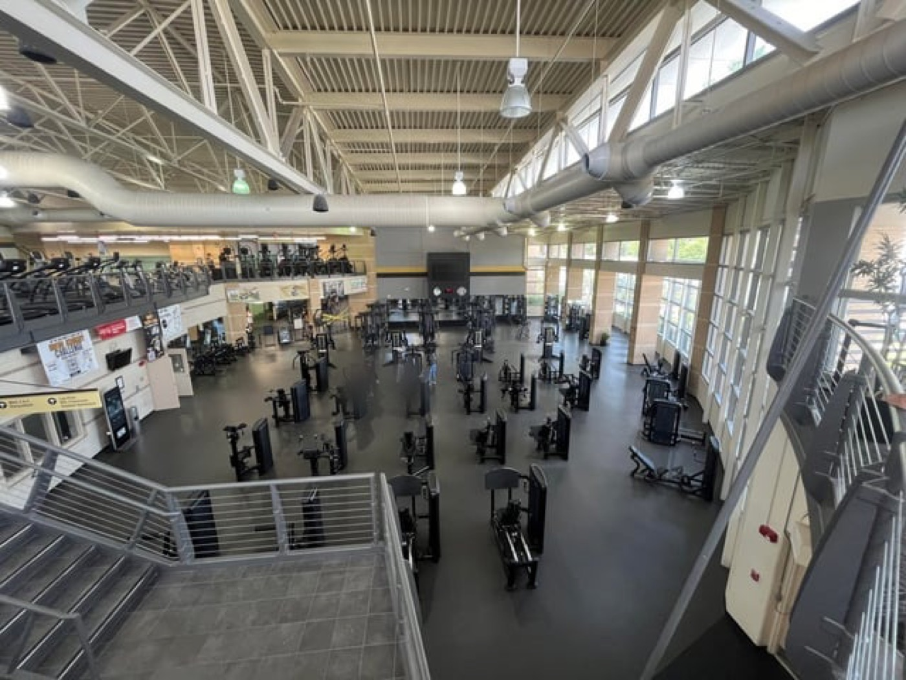
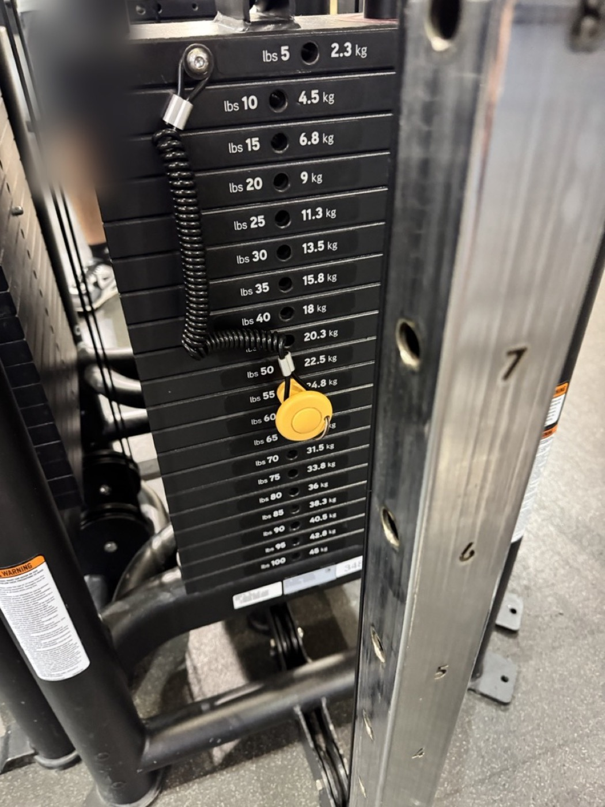

Kairos at the RWC
My second claim with its evidence and Downs citations, and why my ideas matter.
Framing statement
Drafting second claim for MP1. This is my second claim about kairos at the Recreation and Wellness Center, with evidence, citations from Downs, and a “So What?” section on why these ideas matter.
Drafting Second Claim for MP1
Michael Wong
ENC 1101 · Fall 2026
Cover
Drafting Second Claim for MP1
Michael Wong
Professor Baker
ENC 1101
29 September 2026
1
The second claim
I train in the early morning, and in the early morning the RWC is quiet. The racks are open, and I move straight down my plan. The one hour in my week when I cannot train early is Tuesday at about 10:45 a.m., right after my ENC class. By then the building is packed and loud. I am not angry that the machines are taken. I am just not a fan of crowded places.
2
People often ask me how many sets I have left or whether they can work in with me, and that does not bother me. What bothers me is knowing that someone is waiting on me. It makes me self-conscious of my time and I feel rushed, so I rest less between sets. On one Tuesday I did two exercises per muscle group instead of three and left early, because I did not want to keep waiting either.
3
Figure 1

Figure 1: The lower floor of the RWC with most machines open. This is close to what the floor looks like when I train in the early morning. At 10:45 on a Tuesday, most of these stations are taken. Photo by u/Jswee1, r/ucf; see Image Credits.
4
Downs gives the Greek term for this. Kairos, he writes, “translates to something like ‘timely good fortune’ or simply ‘lucky timing’” (467). He explains that rhetors have “far-from-complete control” over their situation, because circumstances outside their control can change the moment (467). I do not choose how many other students decide to show up at the time I go. The equipment on Tuesday is the same as on Monday morning. Only the timing changed, and it changed how much room I had to belong.
5
But the timing on Tuesday did not only take something from me. The day I met Huy was a Tuesday at the same crowded hour, after my ENC class. I was on the dip machine when he came over. He is from Vietnam, and he studies electrical engineering, which is my major too, so we talked through my whole time on that machine. I asked for his number because I thought he could be a good mentor. I have not seen him since.
6
At the RWC, timing decides what the crowd does to my sense of belonging. The same Tuesday hour that rushes my workout and makes me feel in the way also put me next to another engineering student I would never have met at 7 a.m. Kairos is lucky timing, and luck can go either way.
7
So What?
Both findings matter to me personally because the RWC is a place I am in almost every day. Before this class, I just used it. Learning about rhetoric, and principles like kairos and identification, helped me see that the building is designed to give its users a specific experience.
8
It looks like every commercial gym I have used, so I was confident there from the first day, and the logo I had been walking past for weeks turned out to be part of why it feels like UCF.
The weight stack is a good example of that familiarity. The pin sits in a printed number, and that number means the same thing at the RWC, at Crunch, and on the equipment I know from home.
9
It does not matter which gym I walk into or what hour I get there. The same weight will be there, and I do not have to start from scratch. Even on a crowded Tuesday, when I am rushed and resting less, the number on the stack tells me I am still making progress.
10
Figure 2

Figure 2: The printed numbers on a cable stack at the RWC. The same numbers mean the same weight at any gym, so my progress comes with me. Photo taken by me.
11
For learning about rhetoric, this project showed me that a building can argue without saying anything, and that it can push some people out as easily as it pulls others in. The RWC has no tables and nowhere to sit, and it makes me put my things in a locker before I start. Those choices push out the academic side of being a student. The building welcomes me as someone who trains, not as someone who wants to sit down and study.
12
Timing works the same way. The same room can include me or crowd me out depending on the hour.
Learning about rhetors will help me later, at UCF and anywhere else I go. It helps me look for the real intentions behind a place, and it reminds me that other people can take their own meanings from the same things I see. A logo or a crowded hour does not mean the same thing to everyone.
13
For other UCF students, I think the takeaway is that UCF does not only mean a school. It works more like a city that is meant to help you grow and learn life skills, not just academics. The gym is one part of that city. If it feels crowded, it may just be the hour, and the crowded hour might be the one where you meet someone worth knowing.
14
Image Credits
Figure 2 is my own photo. Figure 1 is credited below.
Jswee1 [u/Jswee1]. “New gym equipment opens Monday.” Reddit, r/ucf, Mar. 2024, www.reddit.com/r/ucf/comments/1bkm4e9/new_gym_equipment_opens_monday/. Accessed 29 Sept. 2026.
15
Work Cited
Downs, Doug. “Rhetoric: Making Sense of Human Interaction and Meaning-Making.” Writing about Writing, edited by Elizabeth Wardle and Doug Downs, 3rd ed., Bedford/St. Martin’s, 2017, pp. 458–481.
16
Drafting Second Claim for MP1
Michael Wong
Professor Baker
ENC 1101
29 September 2026
I train in the early morning, and in the early morning the RWC is quiet. The racks are open, and I move straight down my plan. The one hour in my week when I cannot train early is Tuesday at about 10:45 a.m., right after my ENC class. By then the building is packed and loud. I am not angry that the machines are taken. I am just not a fan of crowded places. People often ask me how many sets I have left or whether they can work in with me, and that does not bother me. What bothers me is knowing that someone is waiting on me. It makes me self-conscious of my time and I feel rushed, so I rest less between sets. On one Tuesday I did two exercises per muscle group instead of three and left early, because I did not want to keep waiting either.
Figure 1: The lower floor of the RWC with most machines open. This is close to what the floor looks like when I train in the early morning. At 10:45 on a Tuesday, most of these stations are taken. Photo by u/Jswee1, r/ucf; see Image Credits.
Downs gives the Greek term for this. Kairos, he writes, “translates to something like ‘timely good fortune’ or simply ‘lucky timing’” (467). He explains that rhetors have “far-from-complete control” over their situation, because circumstances outside their control can change the moment (467). I do not choose how many other students decide to show up at the time I go. The equipment on Tuesday is the same as on Monday morning. Only the timing changed, and it changed how much room I had to belong.
But the timing on Tuesday did not only take something from me. The day I met Huy was a Tuesday at the same crowded hour, after my ENC class. I was on the dip machine when he came over. He is from Vietnam, and he studies electrical engineering, which is my major too, so we talked through my whole time on that machine. I asked for his number because I thought he could be a good mentor. I have not seen him since.
At the RWC, timing decides what the crowd does to my sense of belonging. The same Tuesday hour that rushes my workout and makes me feel in the way also put me next to another engineering student I would never have met at 7 a.m. Kairos is lucky timing, and luck can go either way.
Both findings matter to me personally because the RWC is a place I am in almost every day. Before this class, I just used it. Learning about rhetoric, and principles like kairos and identification, helped me see that the building is designed to give its users a specific experience. It looks like every commercial gym I have used, so I was confident there from the first day, and the logo I had been walking past for weeks turned out to be part of why it feels like UCF.
The weight stack is a good example of that familiarity. The pin sits in a printed number, and that number means the same thing at the RWC, at Crunch, and on the equipment I know from home. It does not matter which gym I walk into or what hour I get there. The same weight will be there, and I do not have to start from scratch. Even on a crowded Tuesday, when I am rushed and resting less, the number on the stack tells me I am still making progress.
Figure 2: The printed numbers on a cable stack at the RWC. The same numbers mean the same weight at any gym, so my progress comes with me. Photo taken by me.
For learning about rhetoric, this project showed me that a building can argue without saying anything, and that it can push some people out as easily as it pulls others in. The RWC has no tables and nowhere to sit, and it makes me put my things in a locker before I start. Those choices push out the academic side of being a student. The building welcomes me as someone who trains, not as someone who wants to sit down and study. Timing works the same way. The same room can include me or crowd me out depending on the hour.
Learning about rhetors will help me later, at UCF and anywhere else I go. It helps me look for the real intentions behind a place, and it reminds me that other people can take their own meanings from the same things I see. A logo or a crowded hour does not mean the same thing to everyone.
For other UCF students, I think the takeaway is that UCF does not only mean a school. It works more like a city that is meant to help you grow and learn life skills, not just academics. The gym is one part of that city. If it feels crowded, it may just be the hour, and the crowded hour might be the one where you meet someone worth knowing.
Figure 2 is my own photo. Figure 1 is credited below.
Jswee1 [u/Jswee1]. “New gym equipment opens Monday.” Reddit, r/ucf, Mar. 2024, www.reddit.com/r/ucf/comments/1bkm4e9/new_gym_equipment_opens_monday/. Accessed 29 Sept. 2026.
Downs, Doug. “Rhetoric: Making Sense of Human Interaction and Meaning-Making.” Writing about Writing, edited by Elizabeth Wardle and Doug Downs, 3rd ed., Bedford/St. Martin’s, 2017, pp. 458–481.